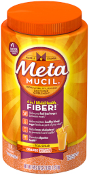
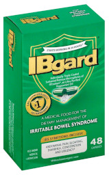
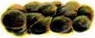
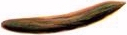
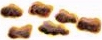
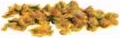

IBS Template


| Bristol Stool Form Scale |
| Type 1 |
 |
Separate hard lumps, like nuts (hard to pass) |
| Type 2 |
 |
Sausage-shaped, but lumpy |
| Type 3 |
 |
Like a sausage, but with cracks on its surface |
| Type 4 |
 |
Like a sausage or snake, smooth and soft |
| Type 5 |
 |
Soft blobs with clear-cut edges (passed easily) |
| Type 6 |
 |
Fluffy pieces with ragged edges, a mushy stool |
| Type 7 |
|
Watery, no solid pieces, ENTIRELY LIQUID |
This page was last updated on
Disclaimer: Information presented in the template should be re-checked and should not be used alone to guide patient care or substitute for clinical judgement.
Note: Please copy text into the EMR prior to adding any HIPPA information. Though no information is being saved/transmitted on this site, typing private information into a web page is generally bad practice.